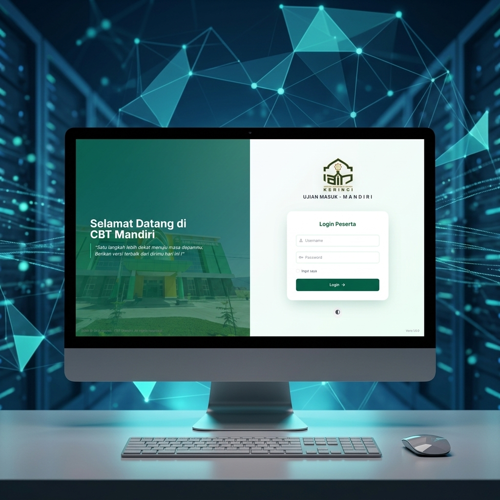
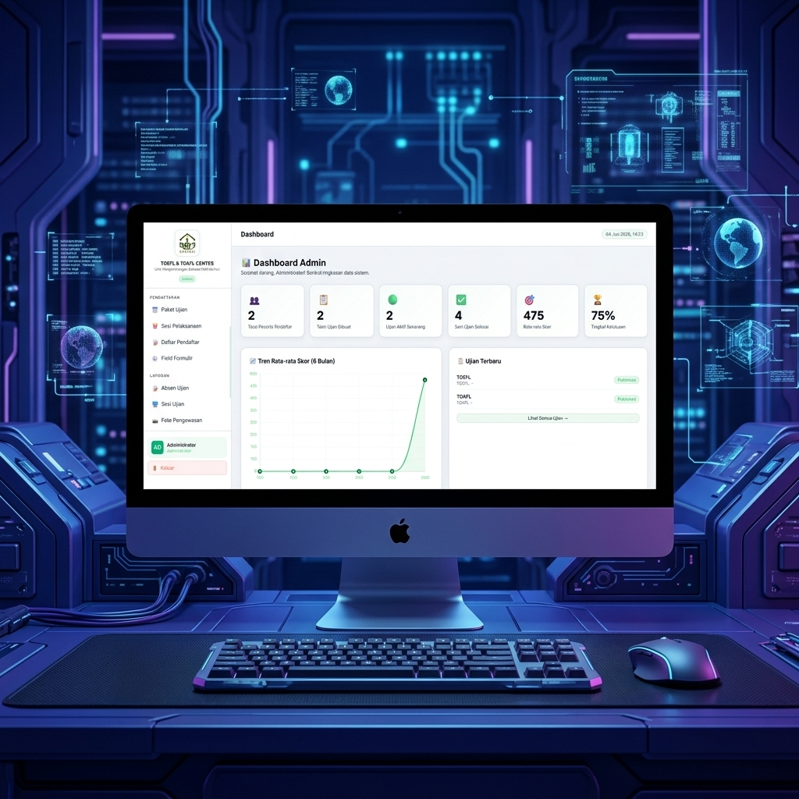

Merancang Arsitektur Digital Berkinerja Tinggi.
Saya adalah Full-Stack Engineer yang mengkhususkan diri dalam membangun infrastruktur cloud yang skalabel dan antarmuka pengguna dengan fidelitas tinggi. Saat ini saya sedang mendorong batas-batas Web3 dan otomatisasi yang digerakkan oleh AI.
Karya Pilihan
Pilihan kurasi pencapaian rekayasa dan eksperimen kreatif.
Portal Digital Ponpes Permata Nusantara Madani
Sistem informasi modern berbasis web yang dibangun secara tangguh menggunakan arsitektur Laravel dan keandalan MySQL. Platform ini mendigitalkan seluruh ekosistem administrasi dan akademik pesantren, menghadirkan pengalaman layanan digital terintegrasi untuk mencetak generasi Qur'ani yang unggul.
Layanan Mahasiswa
Platform pengaduan terpusat untuk mahasiswa IAIN Kerinci dengan fitur pelacakan tiket real-time.

CBT Mandiri IAIN Kerinci
Platform Ujian Berbasis Komputer (Computer Based Test) mandiri untuk penerimaan mahasiswa baru. Menampilkan sistem tangguh dengan keamanan ujian tingkat tinggi dan antarmuka yang sangat responsif.

Pusat Bahasa IAIN Kerinci
Sistem pengelolaan ujian TOEFL & TOAFL komprehensif. Menampilkan statistik peserta, analitik skor real-time, dan manajemen sesi ujian secara terpusat.
Jejak Profesional
Arsitek Perangkat Lunak Senior
2021 — SEKARANGMemimpin transisi dari arsitektur monolitik ke ekosistem layanan mikro terdistribusi. Mengurangi biaya operasional sebesar 40% melalui orkestrasi sumber daya cerdas dan kebijakan penskalaan otomatis.
Full Stack Engineer
2018 — 2021Mengembangkan aplikasi React dan layanan backend Node.js berkinerja tinggi. Mempelopori kerangka UI internal yang diadopsi oleh 12 tim lintas fungsi.
Pengembang Frontend
2016 — 2018Berfokus pada animasi dengan fidelitas tinggi dan pengalaman web responsif untuk klien Fortune 500. Mengkhususkan diri dalam GSAP dan arsitektur CSS yang berkinerja baik.
TEKNOLOGI INTI
Siap membangun sesuatu yang luar biasa?
Saat ini menerima proyek konsultasi pilihan dan peluang penuh waktu. Mari diskusikan peta jalan teknis Anda.